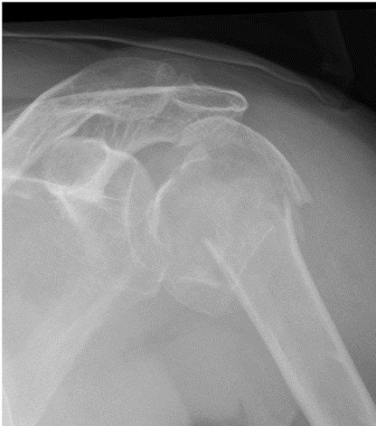

Ficha del catálogo
Fractura del húmero proximal
- Sistema
- Óseo
- Modalidad
- RX
- Región
- Hombro
- Dificultad
- Intermedio
Es una fractura muy común en el anciano con hueso frágil tras una caída sobre el hombro y también aparece en jóvenes por traumatismos de alta energía. El análisis se basa en identificar cuántos de los cuatro segmentos anatómicos están desplazados, es decir la cabeza articular, el troquíter, el troquín y la diáfisis. La mayoría son fracturas poco desplazadas que se tratan sin cirugía, pero las que separan varios fragmentos comprometen la vascularización de la cabeza humeral.
Técnica
Anteroposterior verdadera de hombro con proyección en Y de escápula o axial. La segunda proyección es imprescindible para juzgar el desplazamiento en el plano sagital.
Qué observar
- Trazo en el cuello quirúrgico con angulación en varo de la cabeza
- Separación del troquíter, que migra hacia arriba y atrás por el manguito rotador
- Impactación de la cabeza en valgo con pérdida del ángulo cervicodiafisario
- Relación de la cabeza con la glenoides para excluir luxación asociada
- Extensión del trazo a la superficie articular y conminución metafisaria
- Longitud del segmento posteromedial de la cabeza, indicador de riesgo vascular
Hallazgos
Fractura del cuello quirúrgico o del troquíter con grado variable de desplazamiento, angulación en varo y edema de partes blandas periarticulares.
Perlas
Se considera que un segmento está desplazado cuando se separa más de 1 cm o se angula más de 45 grados respecto al resto. Por debajo de esos valores la fractura se comporta como un trazo estable aunque haya varias líneas visibles.
Diagnóstico diferencial
- Luxación glenohumeral
- La cabeza está fuera de la glenoides y puede no haber trazo óseo.
- Fractura patológica sobre metástasis
- Existe lesión lítica previa y el traumatismo es mínimo.
- Rotura masiva del manguito rotador
- Ascenso de la cabeza sin solución de continuidad ósea.
Simuladores
- Fisis humeral proximal en el adolescente
- Cortical nutricia y línea epifisaria residual del adulto joven
- Superposición de la escápula en proyecciones mal centradas
Por modalidad
- RX
- Primera línea para el diagnóstico y el seguimiento
- TC
- Cuenta y sitúa los fragmentos antes de la cirugía
- RM
- Valora el manguito rotador y las fracturas ocultas del troquíter
Protocolo
Anteroposterior verdadera más proyección en Y o axial. Tomografía con reconstrucciones cuando se plantea osteosíntesis o prótesis.
Clasificación
El sistema más difundido cuenta los segmentos desplazados y clasifica la fractura en dos, tres o cuatro partes, con riesgo creciente de necrosis de la cabeza humeral.
Errores frecuentes
- Informar solo con la proyección frontal y no ver el desplazamiento posterior
- Pasar por alto una fractura del troquíter aislada, causa frecuente de dolor persistente
- No comprobar la relación entre cabeza y glenoides en las fracturas con luxación

hombro humero proximal troquiter cuello quirurgico osteoporosis trauma necrosis avascular